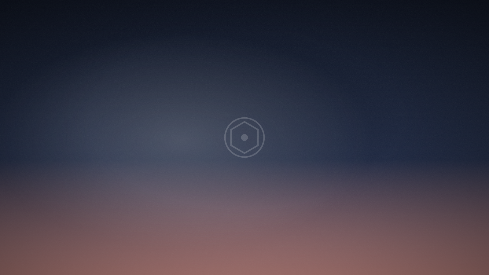

What golden hour really looks like in Kerala
Most advice about light is written for latitudes where the sun sets slowly. Ours does not. What that actually means for planning an evening here.

If you read about light on photography websites, most of what you find was written in Europe or North America, somewhere around forty-five degrees of latitude. Up there, golden hour is a genuinely leisurely affair — in June the sun can take well over an hour to go down, and the warm light drags on so long that photographers get casual about it.
Kochi sits at about ten degrees north. The sun comes down steeply here, and the consequences are practical.
The window is shorter than you think
The warm, low, flattering light that everybody wants lasts roughly forty minutes here, not ninety. And the useful part — when the sun is low enough to be soft but still bright enough to shape a face — is closer to twenty-five.
After that there is a second window of about fifteen to twenty minutes once the sun is below the horizon, when the sky becomes the light source. It is beautiful, even and completely shadowless, and it is the reason we will sometimes ask for ten more minutes when it already looks dark to everyone else.
What this means in planning terms is simple: if portraits are scheduled to start when the golden light begins, they are already late. We want to be standing in position, with the group dispersed and the couple present, before it starts.
The practical version
Find your sunset time. Subtract forty-five minutes. That is when couple portraits should begin — not when people should start being gathered for them. Gathering takes fifteen minutes on a good day.
But it barely moves across the year
The compensation for a short window is a predictable one. Near the equator, sunset time varies far less across the seasons than it does further north. In Kochi the difference between the earliest and latest sunset across the whole year is a little under an hour — roughly a quarter past six in late November, a little before seven in June.
Compare that with London, where it swings by more than eight hours. It means that in Kerala, a plan that works for a wedding in January works almost unchanged for one in August. Whatever running order you build around the light is reusable, and we can tell you with reasonable confidence what the light will be doing at half past six on your date a year from now.
Midday is the real enemy
The flip side of a steep sun is that it gets very high in the middle of the day. From roughly eleven to three, the sun is close enough to overhead to be genuinely difficult: shadows fall straight down, eyes go dark, foreheads blow out, and everybody squints.
This is survivable and we survive it every week. The tools are open shade — a verandah, the north side of a wall, deep tree cover, a doorway — and these are what we are looking for when we walk a venue before the day. What does not work is standing people in the open and hoping. If your ceremony is at noon in full sun, which happens often, the honest answer is that we will find shade for the portraits and photograph the ceremony itself as it is.
Monsoon is not a problem, it is a different plan
From June to September the limiting factor stops being the sun and becomes the cloud in front of it. Couples apologise to us about this constantly and they should not.
Heavy overcast is an enormous diffuser. It is soft, even, forgiving light that works at any hour of the day, including the midday hours that would otherwise be hostile. Skin looks good in it. Nobody squints. The thing it removes is the sunset window, because there is no visible sunset — the light simply fades out over about half an hour.
So monsoon scheduling inverts. The hour before sunset stops being special, which frees the running order considerably. What matters instead is:
- A covered location that photographs well. Not a tent — tents are green and horrible. A verandah, a portico, a doorway with light coming in sideways.
- Slack in the schedule. Rain here comes in bursts. If there is twenty minutes of flexibility, we can take you outside during a gap, and the light immediately after heavy rain is some of the best light of the year.
- A decision made in advance about getting wet. Some couples are delighted to stand in it. If you are, say so early, because those are frequently the photographs people remember from the entire wedding.
The light inside buildings here
One last local specific. A lot of older houses in Kerala are built for heat rather than light: deep verandahs, small windows, dark interiors. This produces a very particular and very good kind of light — a bright doorway or window acting as a single hard-edged source in an otherwise dark room.
It is close to ideal for photographs of preparations, and it is routinely ruined by switching on the ceiling light, which adds a flat greenish wash and cancels the whole effect. If there is one thing to take away from this: on the morning of your wedding, open the doors and windows and leave the lights off.
None of this is a reason to plan your wedding around a camera. But the light is the one supplier that does not negotiate, and it is free, so it seems worth knowing what it is going to do.
Keep reading